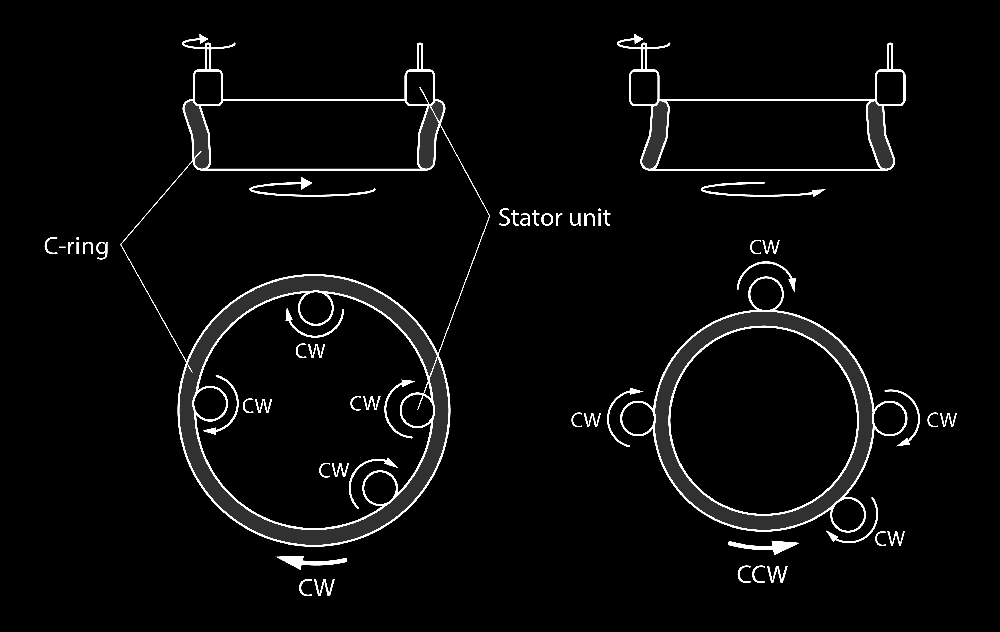
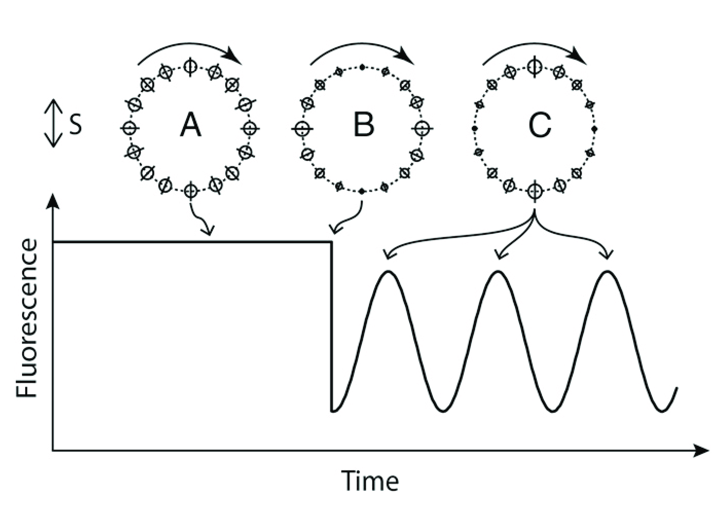
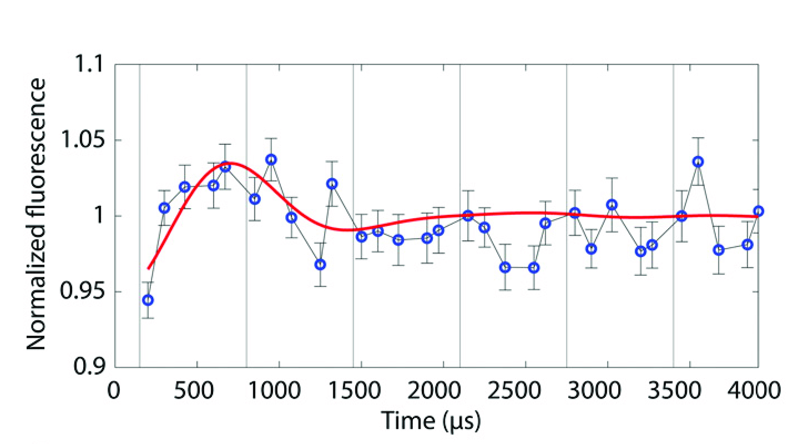
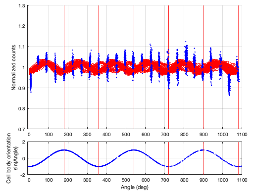

https://bit.ly/GabrielHosuSamuelLab
The bacterial flagellar motor
Aravi Samuel, 2023

Howard Berg (1934-2021)
._Natuurkundige_te_Delft_Rijksmuseum_SK-A-957.jpeg)
"In the year 1657, I discovered very small creatures living in rainwater."
Anthony von Leeuwenhoek
1632-1723
Delft, Dutch Republic
Escherichia coli
Biased random walks

Wild-type E. coli cell executing a random walk in a homogeneous medium.
Planar projections of a 3D track
Flagella rotate


CCW rotation → run
CW rotation → tumble
"If bacterial flagella rotate, the structures at the base of the flagellum
deserve more attention than they have received thus far."
-Howard Berg
The bacterial flagellar motor

Fluctuation analysis of motor speed

Torque-generating units step independently

Variance predicts numbers of steps
\[ \theta = \phi \times n \]
Variance predicts numbers of steps
\[ \theta = \phi \times n \]
\[ \left< \theta \right> = \phi \times \left< n \right> \]
Variance predicts numbers of steps
\[ \theta = \phi \times n \]
\[ \left< \theta \right> = \phi \times \left< n \right> \]
\[ \left< \theta^2 \right> - \left< \theta \right>^2 = \phi^2 \times \left( \left< n^2 \right> - \left< n \right> ^2 \right) \]
Variance predicts numbers of steps
\[ \theta = \phi \times n \]
\[ \left< \theta \right> = \phi \times \left< n \right> \]
\[ \left< \theta^2 \right> - \left< \theta \right>^2 = \phi^2 \times \left( \left< n^2 \right> - \left< n \right> ^2 \right) \]
\[ \left< n^2 \right> - \left< n \right> ^2 = \left< n \right> \]
Variance predicts numbers of steps
\[ \theta = \phi \times n \]
\[ \left< \theta \right> = \phi \times \left< n \right> \]
\[ \left< \theta^2 \right> - \left< \theta \right>^2 = \phi^2 \times \left( \left< n^2 \right> - \left< n \right> ^2 \right) \]
\[ \left< n^2 \right> - \left< n \right> ^2 = \left< n \right> \]
\[ \therefore \phi=\frac{\left< \theta^2 \right> - \left< \theta \right> ^2}{\left< \theta \right>} \]
Cryo-electron microscopy

Deme et al 2020
Tan et al 2021
Cryo-electron microscopy
Deme et al 2020
Santiveri et al 2020
ATP synthase

A model for torque generation and switching
Polarized photobleaching → polarization-dependent fluorescence
Hosu et al 2017
Probing C-ring dynamics in swimming cells
The C-ring rotates with the flagellum
Hosu et al 2017
Probing motB dynamics in tethered cells
motB rotates at the same speed as the body of a tethered cell
Motivation

"Is any of this knowledge practical? The reading of the external environment by cells of all types, leading to responses in growth or motility, is fundamental to life. Bacterial chemotaxis provides a model for learning how such processes can work. However this is not what has motivated me. I have wanted to know, simply, how such a tiny creature does its thing. How, for example, has it solved the problem of finding greener pastures within the constraints imposed by physics? This is a matter of curiosity. Curiosity is the driving force of basic science."
-Howard Berg
Acknowledgments

Alina Vrabioiu

Gabriel Hosu

Rowland Institute at Harvard
References
E. S. Boyden, “A history of optogenetics: The development of tools for controlling brain circuits with light,” F1000 biology reports, vol. 3, pp. 11–11, 2011.
P. Cluzel, M. Surette, and S. Leibler, “An ultrasensitive bacterial motor revealed by monitoring signaling proteins in single cells,” Science, vol. 287, no. 5458, pp. 1652–1655, 2000.
J. C. Deme, S. Johnson, O. Vickery, A. Muellbauer, H. Monkhouse, T. Griffiths, R. H. James, B. C. Berks, J. W. Coulton, P. J. Stansfeld, and S. M. Lea, “Structures of the stator complex that drives rotation of the bacterial flagellum,” Nature Microbiology, vol. 5, no. 12, pp. 1553–1564, 2020.
B. G. Hosu, V. S. J. Nathan, and H. C. Berg, “Internal and external components of the bacterial flagellar motor rotate as a unit,” Proceedings of the National Academy of Sciences, vol. 113, no. 17, pp. 4783–4787, 2016.
F. Kawano, H. Suzuki, A. Furuya, and M. Sato, “Engineered pairs of distinct photoswitches for optogenetic control of cellular proteins,” Nature Communications, vol. 6, no. 1, pp. 6256– 6256, 2015.
J. A. Owen and J. M. Horowitz, “Size limits the sensitivity of kinetic schemes,” Nature Communications, vol. 14, no. 1, pp. 1280–1280, 2023.
M. Santiveri, A. Roa-Eguiara, C. Kühne, N. Wadhwa, H. Hu, H. C. Berg, M. Erhardt, and N. M. Taylor, “Structure and function of stator units of the bacterial flagellar motor,” Cell, vol. 183, no. 1, 244–257.e16, 2020.
D. Strickland, X. Yao, G. Gawlak, M. K. Rosen, K. H. Gardner, and T. R. Sosnick, “Rationally improving LOV domain-based photoswitches,” Nature Methods, vol. 7, no. 8, pp. 623–626, 2010.
A. J. Wolfe and H. C. Berg, “Migration of bacteria in semisolid agar,” Proceedings of the National Academy of Sciences, vol. 86, no. 18, pp. 6973–6977, 1989.
J. Yuan, R. W. Branch, B. G. Hosu, and H. C. Berg, “Adaptation at the output of the chemotaxis signalling pathway,” Nature, vol. 484, no. 7393, 233–U115, 2012.
B. D. Zoltowski and B. R. Crane, “Light Activation of the LOV Protein Vivid Generates a Rapidly Exchanging Dimer,” Biochemistry, vol. 47, no. 27, pp. 7012–7019, 2008.